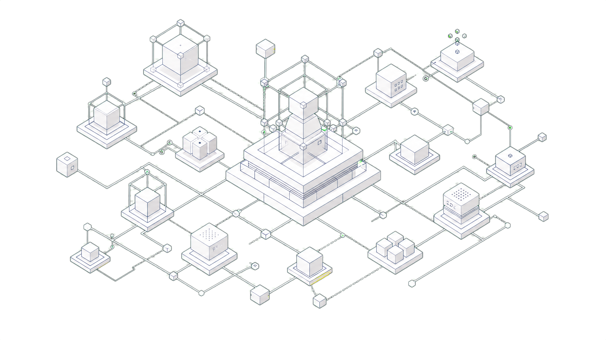
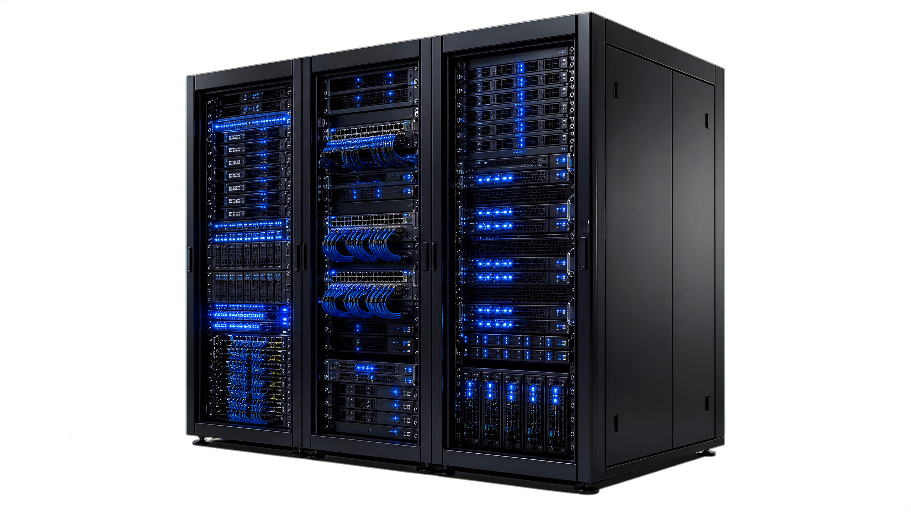

Проектируем, программируем и внедряем автономные технологические экосистемы.
Мы устраняем технологический разрыв между аппаратным (Hardware) и программным (Software) уровнями, создавая независимые отказоустойчивые решения для индустриального бизнеса.
Создаем независимые аппаратные и IT-решения полного цикла
Мы полностью убираем технологический разрыв между физическим миром промышленного оборудования (Hardware) и цифровым миром корпоративной логики (Software). Наша команда проектирует независимые аппаратные решения с нуля, включая трассировку многослойных плат, подбор электронных компонентов, написание прошивок реального времени и разработку монолитного программного обеспечения корпоративного класса Enterprise.
Мы создаем отказоустойчивые распределенные системы, функционирующие в реальном времени под критическими нагрузками и обеспечивающие надежный фундамент для вашего бизнеса. Весь цикл разработки локализован для обеспечения максимальной автономии.
Карта технологических компетенций
Наш технологический стек
Проектирование и микроэлектроника

Разработка топологии сложных многослойных печатных плат (до 12 слоев) с жестким контролем электромагнитной совместимости в Altium Designer. Низкоуровневое программирование микроконтроллеров архитектуры ESP32, STM32 и ARM Cortex на базе операционных систем реального времени FreeRTOS и ESP-IDF. Интеграция прецизионных аналого-цифровых преобразователей (24-битные АЦП-чипы HX711 для весовых тензометрических датчиков с программным подавлением шумов), проектирование сверхэкономичных автономных цепей питания (Ultra-Low Power Deep Sleep режимы до 15 мкА) и промышленных радиомодулей связи LoRaWAN, Cellular (NB-IoT/LTE-M) и интерфейсов RS-485/Modbus.
Высоконагруженные экосистемы

Разработка и написание отказоустойчивых монолитных программных комплексов и распределенных микросервисных архитектур на базе современных компилируемых и интерпретируемых языков (Go, Python, Node.js). Проектирование и развертывание высокодоступных кластеризованных баз данных (PostgreSQL, ClickHouse, Redis, MongoDB), создание гибких документированных API (gRPC, REST, GraphQL) и систем обмена сообщениями в реальном времени через WebSockets и брокеры очередей RabbitMQ/Kafka. Мы закладываем архитектурные решения со стопроцентной изоляцией данных, контейнеризацией Docker/Kubernetes и автоматическим развертыванием CI/CD.
Интеллектуальные агенты

Обучение, файнтюнинг (Fine-Tuning) и развертывание локальных больших языковых моделей (LLM, таких как Llama 3, Mistral, Qwen) строго внутри защищенного On-Premise контура компании без передачи данных во внешние облачные сервисы. Профессиональная интеграция нейросетевых голосовых движков перевода речи в текст и синтеза голоса (Whisper, Voice-to-Text / Text-to-Speech), проектирование и внедрение систем компьютерного зрения (YOLO v8/v10) для детекции брака и контроля безопасности сотрудников, а также разработка интеллектуального распознавания документов (AI OCR).
Продуктовая матрица
Инженерные кейсы кастомных разработок
Интеллектуальный ИИ-Финансист и документооборот
Корпоративный ИИ-ассистент, способный распознавать голосовые команды менеджеров, транскрибировать аудио с помощью Whisper, извлекать именованные сущности (сумма, валюта, контрагент) и проводить авто-аудит договоров и счетов через AI OCR.
→Высоконагруженная медиа-платформа ментального здоровья
Масштабируемый аудиостриминговый сервис Hi-Res класса с технологией динамического синтеза речи (TTS) для проведения персонализированных медитаций и CBT ИИ-сопровождения сотрудников крупных промышленных конгломератов.
→Программно-аппаратный комплекс умного ритейла
Автономная розничная торговая точка самообслуживания (микромаркет) на базе контроллеров ESP32, высокоточных тензодатчиков веса HX711 с 24-битным АЦП, облачной базой данных остатков товаров и бесконтактной оплатой по QR-коду.
→Omnichannel CRM академической мобильности
Узкоспециализированная CRM-система для образовательного консалтинга, автоматизирующая ведение клиентов от лида до зачисления, агрегирующая внешние каналы связи в одно окно и автоматически проверяющая дедлайны зарубежных вузов.
→Монолитная ERP-платформа сквозного управления класса Enterprise для Акционерных Обществ.
Перспективный проект сквозной цифровизации отечественных промышленных холдингов. Наша ERP-система обеспечивает бесшовную вертикальную интеграцию: от сбора низкоуровневых данных с IoT-датчиков на станках и оборудовании до автоматического юридического комплаенса сделок, управления цепочками поставок и формирования финансовых отчетов для Совета Директоров. Продукт создается как национальная альтернатива зарубежным ERP-системам (SAP, Oracle) с развертыванием в защищенном контуре предприятия.
Изучить архитектуру проектаСоучредительство и эксклюзивные права
Компания QADR является официальным совладельцем технологии Amirig. Наша компания обладает исключительными правами владения, внедрения и дистрибуции данного программно-аппаратного комплекса на всей территории Республики Казахстан.
Аппаратная архитектура (Hardware)
Спецификация и компонентная база промышленного беспроводного датчика
| Взрывозащита | Ex d IIC T6 (Взрывонепроницаемая оболочка, зона 0/1) |
| Пылевлагозащита | IP68 / Герметичный корпус (Полная защита от затопления) |
| Беспроводной протокол | LoRaWAN (Частота 868 МГц в РК) / NB-IoT / LTE-M |
| Дальность связи | До 10-15 км (В прямой видимости базовой станции) |
| Элемент питания | Литий-тионилхлоридный (Li-SOCl2), тип D, повышенная емкость |
| Ток сна (Deep Sleep) | 15 мкА (Глубокий энергосберегающий режим) |
| Ресурс работы | До 5–7 лет непрерывного круглосуточного цикла измерений |
| Материал корпуса | Анодированный алюминиевый сплав (Литье под давлением) |
| Температурный диапазон | От -40°C до +60°C (Проверен в жестких степных климатах) |
Герметичный корпус IP68
Высокопрочная оболочка из анодированного алюминия устойчива к агрессивным средам, парам сероводорода и кислотам. Сертифицирована для работы во взрывоопасных зонах 0 и 1 классов.
Дальнобойный радиомодуль
Встроенный передатчик LoRaWAN передает показания до 15 км. При необходимости система переключается на сотовый канал NB-IoT/LTE-M для работы без шлюзов.
Литиевая батарея Li-SOCl2
Обладает крайне низким уровнем саморазряда (<1% в год). В сочетании с оптимизированными фазами сна Deep Sleep обеспечивает автономную работу датчика до 7 лет.
Микроконтроллер и RTOS
Ядро под управлением FreeRTOS обеспечивает высокоточную калибровку АЦП-чипов HX711 (24-бит). Встроенный цифровой фильтр Калмана отсекает импульсные гидравлические удары.
Программная платформа риск-инжиниринга Amirig
Функциональные модули сквозного автоматизированного контроля процесса бурения
Контроль качества данных
Непрерывный real-time мониторинг сигналов с буровой для отсечения ложных показаний датчиков и некорректных калибровок в полевых условиях. Исключает ввод грязных данных в модели прогнозирования.
Автораспознавание операций
Машинное определение текущих технологических фаз (бурение слайдом, бурение ротором, СПО, наращивание, промывка, проработка) с точностью до секунды для автоматического цифрового баланса времени.
Риск-инжиниринг под забой
ПредиктивПредупреждение осложнений до их физического проявления: выявление затяжек, посадок, прихватов буровой колонны и выходов из гидравлического окна по сложным динамическим корреляциям.
Сопровождение СПО и гидравлики
Автоматический расчет динамических давлений свабирования и поршневания, непрерывный контроль доливной емкости при спуско-подъемных операциях и оценка степени очистки ствола.
Цифровая отчетность и мессенджеры
Автогенерация суточных рапортов СПО и балансов времени (23 отчетные формы). Мгновенная отправка экстренных оповещений по затяжкам и аномалиям в Telegram инженерной службы.
ИИ-аналитика и видеоконтроль
AI CoreЛокальный ИИ-поиск Terrixa по архивам инцидентов и регламентам ликвидации аварий. Компьютерное зрение (HSE) для автоматического контроля опасных зон на буровой площадке.
Интерактивный симулятор телеметрии SCADA
Попробуйте наш интерактивный SCADA-симулятор бурения. Проверьте реакцию предиктивного анализа аномалий при возникновении критического риска затяжки буровой колонны.
Проблема отрасли
Аварийные затяжки буровой колонны и гидроудары наносят колоссальный ущерб и приводят к простоям скважин. Ручной контроль параметров бурения оператором не исключает риски человеческого фактора.
Стратегическое решение
Внедрение беспроводных датчиков ГТИ с предиктивным риск-инжинирингом Amirig. Алгоритмы автоматически отслеживают аномалии на ранней стадии и прогнозируют прихват инструмента.
Экономический эффект
Сокращение непроизводительного времени буровых бригад на 40%. Предотвращение одной аварии окупает полную стоимость внедрения системы на кустовой площадке.
Сравнение методов мониторинга
| Показатель эффективности | Традиционный кабельный метод | Беспроводной комплекс Amirig |
|---|---|---|
| Скорость развертывания системы | До 2-3 рабочих смен (монтаж кабелей, коробов) | Менее 2 часов (резьбовая установка датчиков) |
| Надежность передачи сигналов | Высокий риск обрывов кабеля механизмами | 100% стабильность (промышленный LoRaWAN радиоканал) |
| Предиктивный контроль безопасности | Только визуальный мониторинг по шкалам | Автоматический ИИ-скоринг рисков и СМС-оповещения |
| Автономность датчиков | Зависит от внешнего кабельного питания | До 5 лет работы от встроенной батареи |
История опытно-промышленных испытаний (ОПИ)
Результаты полевой валидации и эволюция платформы Amirig с 2019 по 2025 годы
Первые испытания ГТИ
Доказана стабильность удаленной беспроводной трансляции телеметрических технологических параметров с датчиков ГТИ в полевых условиях без потери сигналов.
Промышленный запуск
Успешная сдача Amirig в качестве основного ПО для непрерывного технологического бурового контроля без простоев и сбоев при одновременном опросе 3 станций.
Фиксация НПВ и ИИ
Развертывание моделей оценки забойных осложнений и фиксации скрытого непроизводительного времени. Время реакции инженерной службы снижено на 30 мин за счет Telegram API.
Контур ННБ
Интеграция Amirig с данными партий наклонно-направленного бурения (ННБ) и кросс-анализ подрядчиков. Внедрены 23 формы автоматических отчетов по СПО и балансам времени.
Паспорт экономической эффективности
Прямая окупаемость программно-аппаратного комплекса Amirig на основе данных ОПИ
1 136.3
годовых часов оптимизации
Сформирован на основе консервативного сокращения НПВ на 51,65 часа на одну скважину (зафиксировано в ОПИ 2024 г. на контуре из 22 скважин ОПИ 2025 г.).
511.3
МЛНчистого подтвержденного эффекта в год
681.8
МЛНчистого подтвержденного эффекта в год
Дополнительные факторы роста эффективности (Upside)
Защита от повреждения и оставления в скважине дорогостоящего телеметрического оборудования ННБ.
Сокращение времени разбора технологических инцидентов инженерами при работе с базой знаний.
Снижение рисков в сфере охраны труда (ОТ) и промышленной безопасности (ТБ) на площадке в реальном времени.
Техническая спецификация решения
Детальное описание архитектуры и бизнес-эффекта платформы
Интеллектуальный ИИ-Финансист и система автоматического аудита документации
Сегмент: Автоматизация финансового планирования крупного B2B-бизнеса и холдинговых структур.
Суть кейса: Разработка корпоративного ИИ-ассистента, способного вести первичный финансовый учет через голосовой ввод и автоматически проверять входящую первичную документацию на соответствие регламентам компании. Решение заменяет ручной труд бухгалтеров при вводе транзакций и минимизирует риски ошибок.
ИИ-Финансист и Умный OCR-Аудит
Попробуйте нашего ИИ-ассистента в действии. Протестируйте голосовой Whisper-ввод распоряжений или запустите сканирование счетов для моментального комплаенс-аудита.
Финансовая рутина
Бухгалтеры тратят до 70% рабочего времени на ручной перенос реквизитов первичных документов в ERP-системы, допуская опечатки и пропуская фиктивные счета.
Интеллектуальная сверка
ИИ-Финансист мгновенно считывает скан-копии документов, распознает казахскую/русскую речь и автоматически проверяет соответствие сумм утвержденным лимитам CAPEX.
Результат для менеджмента
Скорость ввода и верификации документов возрастает в 8 раз. Полностью исключаются ошибки ввода данных и несанкционированные переводы средств.
Сравнение эффективности обработки счетов
| Этап обработки платежей | Без использования ИИ | С внедрением ИИ-Финансиста |
|---|---|---|
| Распознавание и классификация счетов | Ручная сортировка, до 10 минут на документ | Менее 3 секунд (автоматическое OCR и PDF-парсинг) |
| Проверка лимитов и комплаенса | Сверка с таблицами Excel вручную | Моментальный автоматический аудит по коду закупки |
| Формирование платежного поручения | Ручное копирование БИН и сумм в банк-клиент | Автогенерация реестра и выгрузка в ERP в 1 клик |
Бизнес-результаты
Эффект от интеграции решения на предприятии
Ускорение согласования и оплаты первичных документов за счет автоматического разнесения без ручной сверки.
Исключение человеческих ошибок при вводе транзакций, так как ИИ считывает реквизиты напрямую из документов.
Исключение ошибочных платежей и несогласованного вывода средств благодаря сквозному аудиту договоров.
Техническая спецификация решения
Детальное описание архитектуры и бизнес-эффекта ИИ-финансиста
Высоконагруженная стриминговая экосистема ментального здоровья с персональным ИИ-терапевтом
Сегмент: Biohacking / Корпоративный B2B и массовый B2C сектор ментального здоровья и продуктивности сотрудников.
Суть кейса: Создание масштабного мобильного и веб-сервиса, сочетающего в себе бесперебойный стриминг терапевтического аудиоконтента и интерактивное ИИ-сопровождение пользователя для улучшения качества его жизни. Мы разработали архитектуру с минимальной задержкой воспроизведения и внедрили ИИ-консультанта на базе психотерапевтических практик.
Медитативный плеер и ИИ-Коуч
Попробуйте интерактивное HealthTech-решение. Запустите расслабляющий плеер звуков природы с круговым визуализатором и начните поддерживающий диалог с ИИ-коучем.
Выгорание сотрудников
Стресс и эмоциональное истощение сотрудников ключевых департаментов приводят к росту больничных, текучести кадров и падению продуктивности на рабочих местах.
Нейронный коучинг
Экосистема ментального здоровья использует бинауральные звуковые дорожки для снижения уровня стресса и встроенного ИИ-терапевта (CBT) для снятия острых эмоциональных состояний.
HR-эффективность
Повышение лояльности и вовлеченности персонала на 45%, сокращение затрат на ДМС и создание здоровой психологической среды в коллективе.
Бизнес-эффект
Влияние на показатели компании
Повышение продуктивности
Прямое влияние на показатели удержания кадров, снижение количества больничных и повышение вовлеченности в B2B-сегменте (корпоративные клиенты платформы).
Абсолютная масштабируемость
Возможность обслуживать миллионную аудиторию без деградации скорости работы интерфейса и качества динамической генерации контента за счет распределенной облачной архитектуры стриминга.
Техническая спецификация решения
Детальное описание архитектуры и бизнес-эффекта медиа-платформы
Автономный комплекс умного ритейла и IoT-микромаркетов самообслуживания
Сегмент: Автоматизация розничной торговли / Смарт-вендинг без участия персонала.
Суть кейса: Разработка сквозной экосистемы управления физическими точками продаж: от создания кастомной управляющей платы внутри торгового автомата до мобильного интерфейса покупки в один клик. Мы объединили весовые датчики HX711 с контроллерами ESP32, облачной базой данных и бесконтактными платежами.
Симулятор микромаркета и оплаты
Попробуйте симулятор бесконтактной торговли. Протестируйте открытие 3D-двери умного холодильника, весовое распознавание покупок и оплату через Kaspi QR.
Торговля без персонала
Классический вендинг продает мало из-за ограниченных размеров автомата и невозможности взять товар в руки. Содержать полноценный магазин дорого из-за высоких цен на аренду и персонал.
Концепция микромаркетов
Покупатель сканирует Kaspi QR для открытия двери, берет любые сэндвичи и напитки с полок. Высокоточные датчики веса фиксируют взятые товары, а система автоматически списывает оплату.
Финансовые выгоды
Круглосуточная работа 24/7. Розничная точка располагается на площади всего 1 кв. метр. Средний срок возврата инвестиций (ROI) — от 4 до 5 месяцев.
Результат автоматизации
Экономический эффект внедрения
Выгода: Полностью автономная торговая точка, работающая без перерывов и праздников, не требующая затрат на заработную плату продавцов и кассиров, со стопроцентной защитой от краж благодаря автоматическому весовому контролю полок и мгновенному списанию средств со счета при выходе.
Техническая спецификация решения
Детальное описание архитектуры и бизнес-эффекта комплекса умного ритейла
Омниканальная CRM-система управления процессами международного образования
Сегмент: Образовательный консалтинг / Глобальная академическая интеграция и мобильность.
Суть кейса: Проектирование и создание узкоспециализированной CRM-платформы, полностью координирующей процесс отправки, подготовки документов и зачисления студентов в ведущие мировые университеты. Система автоматизирует воронки, агрегирует чаты и отслеживает критические дедлайны приемных комиссий.
Интерактивная CRM-панель воронки
Попробуйте автоматизированную панель воронки. Протестируйте CRM-конвейер сопровождения сделок, автопроверку полноты документов и автовыставление инвойсов.
Потери в продажах
Сложные многоэтапные сделки в сфере образования страдают из-за потерь заявок на рутинных шагах: отправке договоров, заполнении анкет и сверке оплат.
CRM-Автоматизация
Каждый этап (лид, переписка, документы, анкета, зачисление) полностью оцифрован. Система сама отправляет напоминания и проверяет подлинность документов через OCR-верификацию.
Бизнес-метрики
Рост конверсии из обращения в сделку на 35%. Снижение времени обработки одной заявки менеджером на 60%.
Бизнес-показатели
Операционные метрики внедрения CRM
Рост производительности кураторов за счет автоматического ведения лидов и ликвидации ручной рутины.
Успешность зачисления студентов благодаря жесткому системному контролю и автопроверке дедлайнов приемных комиссий.
Техническая спецификация решения
Детальное описание архитектуры и бизнес-эффекта академической CRM
Монолитная локальная ERP-платформа сквозного управления корпоративного уровня для АО
Цель проекта: Заявить о способности создавать независимые решения национального масштаба, привлечь внимание топ-менеджмента крупнейших промышленных конгломератов и акционерных обществ Республики Казахстан.
Симуляторы корпоративной ERP-платформы
Попробуйте монолитные инструменты ERP в действии. Запустите симулятор потоков данных между департаментами и протестируйте 3D-укладку Best-Fit Decreasing.
Сквозное взаимодействие департаментов АО
Каждый модуль ERP решает специализированные задачи предприятия
Закупочный департамент
Контроль цепочек поставок в реальном времени, автоматический ИИ-скоринг благонадежности контрагентов на базе скоринговых моделей, планирование тендерных процедур и автоматическое бюджетирование. Система автоматически блокирует рисковые закупки до согласования.
Юридический департамент
Модули автоматической генерации сложных пакетов договоров и спецификаций под проекты, интеллектуальный юридический комплаенс и автоматический аудит правовых рисков сделок с внешними подрядчиками на соответствие внутренним регламентам АО.
Финансы и Бухгалтерия
Автоматизация налогового, управленческого и бухгалтерского учета. Любая транзакция на производстве (списание сырья датчиками, отгрузка готовой продукции) или в закупках моментально отражается на финансовом балансе всего холдинга в реальном времени.
Монолитность и Безопасность
Разрозненный софт создает бреши в безопасности. Наша ERP развертывается строго внутри On-Premise контура предприятия без внешних облачных зависимостей.
Сквозная интеграция
Любая транзакция на производстве (списание сырья) или в закупках моментально отражается на финансовом балансе холдинга и доступна на BI дашборде Совета Директоров.
Математическая оптимизация
Интеграция 3D Bin Packing алгоритма позволяет автоматически планировать загрузку контейнеров, сокращая логистические затраты на 25-30%.
Архитектура данных и Интеграционный стек
Отказоустойчивая инфраструктура корпоративного класса для критических нагрузок
Базы данных и Хранилища
PostgreSQL Cluster: Транзакционный реестр ERP, финансовый учет, балансы и юридические смарт-контракты.
ClickHouse: Колоночная БД для телеметрии с датчиков и логов.
Redis Enterprise: Кеширование сессий и оперативной памяти SCADA.
Связующее ПО и Протоколы
gRPC / Protobuf: Низкозадержечное межсервисное взаимодействие.
MQTT / Apache Kafka: Отказоустойчивый брокер сообщений для обработки до 50 000 IoT-сигналов в секунду.
Secure WebSockets: Двусторонний обмен данными с клиентскими интерфейсами в реальном времени.
Информационная безопасность
On-Premise контур: Развертывание в изолированном облаке предприятия.
Crypto Core: Шифрование TLS 1.3 и интеграция с аппаратными модулями HSM.
RBAC / LDAP: Ролевой доступ, синхронизированный с корпоративными политиками каталогов.
Модель поэтапного внедрения (Снижение B2B-рисков)
Прагматичная методология безопасного запуска систем государственного масштаба
Сроки проектирования
Полный цикл проектирования, технического анализа и развертывания пилотного сегмента занимает от 6 до 12 месяцев. В этот период мы проводим глубокий технический аудит существующей IT-инфраструктуры и оборудования заказчика.
Пилотный проект (MVP)
Внедрение начинается с локального пилотного проекта на базе одного ключевого подразделения или дочернего предприятия АО. Мы на практике отлаживаем стыковку аппаратного оборудования и софта, проводим испытания под нагрузкой, и только после успешных испытаний масштабируем монолитную ERP на всю структуру холдинга.
Техническая спецификация решения
Детальное описание архитектуры и бизнес-эффекта ERP-платформы
Обсудить ваш технологический проект
Оставьте заявку, и наша инженерная группа свяжется с вами для технической консультации.